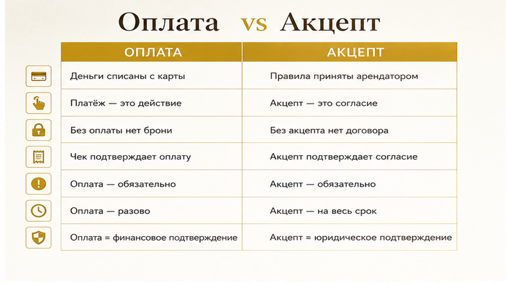
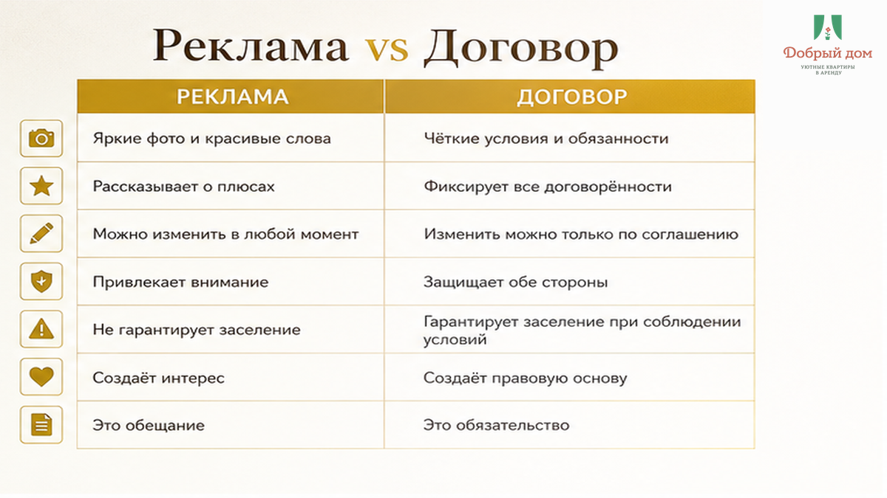
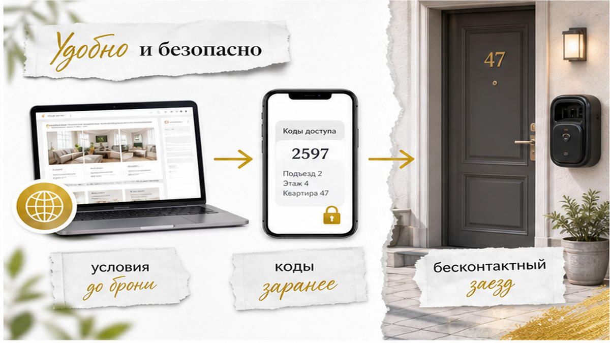

Вы нашли квартиру в Тюмени, списались, вам скинули номер карты. Перевели предоплату — и уже потом открыли правила.
А там семь запретов: заезд с 15:00, выезд до 11:00, гостей не больше двух, ключи никому не передавать, на балконе не курить, отмена без возврата.
И телефон в руке. И один вопрос: «А я на это соглашался?»
Вот где подставят: условия надо читать до перевода. Не после, когда чемодан уже собран, а деньги ушли.
Если правила были опубликованы и доступны до оплаты, перевод может означать согласие с ними.
Не любой перевод автоматически. Не со всем подряд. Но если ссылка была перед глазами, а вы нажали «перевести» — спорить потом гораздо тяжелее.
Три минуты чтения могут спасти деньги и первый вечер в городе.

Посуточно вы снимаете жилое помещение по договору найма. В разговоре все говорят «аренда», но в Гражданском кодексе это наём — статьи 671 и 674.
Договор бывает не только на бумаге. Это может быть анкета, правила на сайте или публичная оферта.
По пункту 3 статьи 438 ГК РФ оплата в ответ на предложение может считаться акцептом — согласием с условиями.
Ключевое слово — «может».
Правила должны быть доступны до того, как вы отправили деньги. Если ссылку не присылали, а новые условия появились в переписке уже после оплаты, это совсем другой разговор.
Но лучше до него не доводить. Тюменцы ищут «договор аренды квартиры» около 1974 раз в месяц. Обычно потому, что читать начинают уже после перевода.

Первое — время.
Вы приехали утренним поездом, а заезд только с 15:00. Ранний заезд в правилах не обещан, хозяин занят — и вы ждёте с чемоданом.
Второе — гости.
Бронировали квартиру на двоих, приехали втроём с ребёнком. А в условиях написано: не больше двух человек, включая детей. Дальше разговор уже не про уют, а про доплату или выселение.
Третье — ключи и коды.
Вы хотели передать код коллеге, который приедет позже. А доступ третьим лицам запрещён. Пункт короткий, последствия неприятные.
Четвёртое — отмена.
Планы поменялись, вы просите вернуть предоплату. А выбранный тариф невозвратный или отмена меньше чем за сутки идёт с удержанием. В шаблонах иногда встречается и «50%» — это не правило рынка, а условие конкретного договора.
Пятое — назначение квартиры.
Жильё сдают для проживания. Фотосессия, съёмка, переговоры на двадцать человек — уже другое дело. И чаще всего оно запрещено.
Откройте этот список, пока деньги ещё у вас.
Полный список — в канале: t.me/Dobriy_dom_72. Там разбираем понятные формулировки и ситуации, с которыми сталкиваются гости в Тюмени.

Мы стараемся убрать вопрос «а что там дальше?» ещё до перевода.
Условия проживания размещаем на сайте до брони. Заезд бесконтактный: заранее отправляем коды, ключи и инструкцию — куда идти, где подъезд, как открыть дверь, где парковка.
Не нужно после ночного поезда ждать: «Хозяин подъедет через час».
Ранний рейс, поздний выезд, ребёнок в поездке — такие детали обсуждаем до оплаты. В августе в Тюмени много командировок и семейных поездок, а лишний час с чемоданом никому не нужен.
Инструкцию по заселению шлём до приезда. Если удобнее, напишите нам в MAX: max.ru/id660300569233_biz. Спросите заранее про часы, гостей и коды — именно эти три вещи чаще всего портят первый вечер.
Не обязательно. Оплата может считаться согласием, если условия были доступны вам до перевода. Если правила показали только после оплаты, ситуация другая.
Сначала проверьте правила. Во многих объектах передавать ключи и коды третьим лицам нельзя.
Нет. Его лучше согласовать заранее и сохранить договорённость в переписке.
Это зависит от условий брони: заранее посмотрите сумму, срок возврата и причины возможного удержания.
Хотите спокойно выбрать даты и квартиру — бронируйте на добрыйдом-72.рф/booking/, все условия смотрите на добрыйдом-72.рф. Если проще голосом — звоните: +7 (993) 574-83-22. Читать правила до перевода — это три минуты, которые остаются вашими.